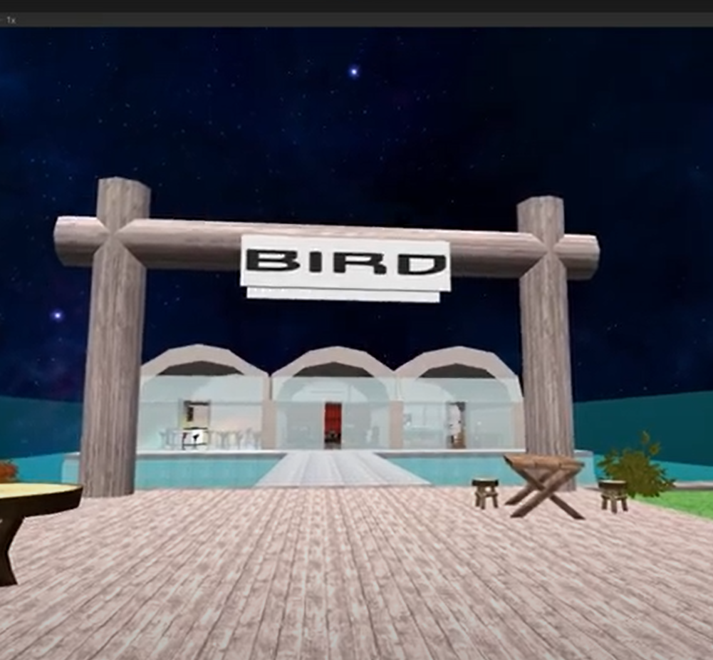

Virtual Reality
In het eerste jaar heb ik voor een van de projecten in een team van 4 studenten een oplossing voor podium, restaurant en club BIRD in Rotterdam bedacht. Door COVID-19 konden ze geen bezoekers ontvangen.
Om deze reden hebben wij in Unity BIRD zo goed mogelijk geprobeerd na te maken. Bezoekers kunnen dan tijdens de pandemie toch hun favoriete podium of club bezoeken, digitaal!
Dit project was mijn eerste ervaring met Unity, en gaandeweg heb ik de basistechnieken van Unity onder de knie gekregen.